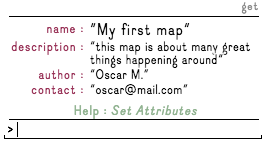
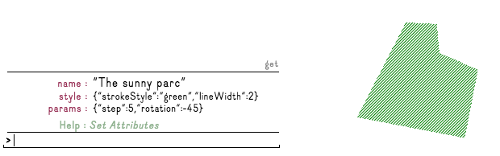
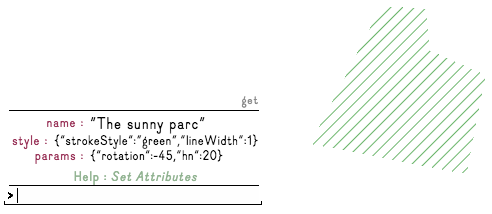

Wænd is in alpha version, if you like to create a user account, visit http://alpha.waend.com/register.
This help is improved from time to time, and you can help us by sending your suggestions at contact@atelier-cartographique.be
An ongoing tutorial is available here
Generalities
1.1 Logic of map publishing
1.2 Presentation of Wænd interface
1.3 Structure of Wænd
1.4 Datas & Metadatas
Play with attributes / metadatas
3.1 Set attribute (set)
3.2 Get attributes (get)
3.3 Edit attribute (edit)
3.4 Delete attribute (del)
3.5 Exemple : customize your profile
Play with features
4.1 Style your features
4.2 Edit feature geometry
Play with layers
5.1 Style at layer level
5.3 Attach a layer to another map
5.4 Detach a layer from a map
5.5 Delete a layer
Import Geo-Datas
5.1 Geo-Datas : Working with GeoJSON
5.2 Geo-Datas : Help with Overpass Turbo
Style tips & tricks
6.1 HTML color generators
6.2 Polygon fill color
6.3 Play with Composite Operation
Other
7.1 Searching maps on Wænd
7.2 Sharing maps
7.3 Embedding a map in another web-page
7.4 Batch import geo-tagged images
7.5 Create and import images tiles
There are two surprising aspects you will discover :

exemple of command, used to set the description of an element

exemple of maps created with wænd
Waend structure is pretty simple, it goes like russian dolls :
User account / Map x / Layer y / Feature z
A user account host maps.
A map host layers.
A layer host features.
We call each of them "context" (User context, map context, etc.) Features are the most simple a-map élément : like a parc, or an image. While maps are groups of layers, we also call them "groups".
There is basicaly two types of informations on wænd :
1- The datas you use to create your maps (images, texts, geo-datas, etc..). Those are the most visible ones.
2- The informations attached to those elements, the metadatas. Here are some exemples of what we call metadatas :
The meta-data are used at every level on waend : on your profile, maps, layers, and features.
Metadatas are also used to change the style of your features.
The next sections of the help explains how to work with metadatas on Wænd.
A first usage of those datas is to give a name to things, a description or other relevant informations, so yourself and your map visitors can read and understand what is your map about.
It leads to a map legend.

exemple of personalized metadatas
A second usage, is about styling your datas.
Eg : If you want a green park, you have will have to set this color infomation to your park feature.

exemple of style and parameters metadatas
setSet attribute to current context (user, group, layer or feature).
Use set to qualify things, to give informations about your maps, etc.
Multiple words must be surronded by "quotes".
Example :
set name my-element-name
set description "here is my description"
set "city population" 1000000getThe command get is very usefull : it displays all attributes from current element.
You can also specify wich attribute value you want to show.
Examples :
get will show all the attributes of the current context
get name will show the value of the name attribute
editThere is no edit button yet, but the functionality is here.
To edit a specific attribute, we use the pipe | sign to chain commands together :
get attribute_name | edit | set attribute_nameEg : get name | edit | set name will get the name value, open the editor with the name value in it, and set the new value as name.
del attributeNameThe command del attributeName will remove the attribute.
Example:
del description
or
del params.textAnother option to delete attributes is to use edit :
get style | edit | set stylewill get all the style attributes, send them to the text editor (edit), and set the editor output as style attributes.
1- Click on the USER link in the menu to go in your user context.
2- In the command line, type set name "the name you want on Wænd" and press enter to validate.
3- Then type get. Your name is here !
4- You can add more informations on your profile doing this way, it's completely free. Just remember that your profil is public.
Used commands :
Line color : set style.strokeStyle + any html color value
Line width : set style.lineWidth + number (in meter)
hatches number : set params.hn + number
hatches rotation : set params.rotation + number (angle)
hatches step : set params.step + number (in meter)
Exemples :
line color (value can be any HTML color value):
set style.strokeStyle orange
set style.strokeStyle #FF7F00
set style.strokeStyle "rgb(255, 127, 0)"
set style.strokeStyle "rgba(255, 127, 0, 1)"
line width :
set style.lineWidth 15
Hatches number :
set params.hn 32
Hatches rotation :
set params.rotation -45
Hatches step :
set params.step 10Here is an illustration of what it does :

Used commands :
Font size : set params.fontsize + number (in meters)
Font color : set style.fillStyle + any html color value
Exemples :
Font size (value in meters):
set params.fontsize 12.6
Font color (value can be any HTML color value) :
set style.fillStyle orange
set style.fillStyle #FF7F00
set style.fillStyle "rgb(255, 127, 0)"
set style.fillStyle "rgba(255, 127, 0, 1)" Here is an illustration of what it does :

Used commands :
adjust : set params.adjust + none OR cover OR fit (default is "none")
clip : set params.clip + true OR false (default is "true")
Exemples :
Adjust :
set params.adjust none
set params.adjust cover
set params.adjust fit
Clip :
set params.clip true
set params.clip false Here is an illustration of what it does :

To edit feature geometry, we use the commands :
gg to get the geometry of that feature
sg to save the geometry of that feature
To edit a feature geometry, type : gg | trace | sg
To edit + duplicate a feature, type : gg | trace | create
To re-trace a polygon, type : trace | sg
To re-draw a freehand line, type : draw | sg
To re-draw a freehand shape, type : draw | close | sg
You can use all the style attribute explained on the feature section at a layer level.
By doing so your style will apply on every features belonging to that layer.
You can override the layer style at a feature level.
Here is an illustration of what it does :

This style is applied on the layer "Many sunny parcs". They are all green, with -45° rotation, except one, wich has specific style.
attachIf you're the owner of the layer, the command will attach the said layer to a map. It doesn't move the layer but will display it within this other map.
The argument is made of a valid path to be created.
Let say you are the author of a layerA, and you want to attach it to a mapZ :
attach /userZ_id/mapZ_id/layerA_idHow it works :
/userZ_id/mapZ_id : the context where you want to attach the layer.
layerA_id : the id of the layer you own and you want to attach somewhere.
detachThe detach command undo what has been done by the attach command, and works the same way.
To detach layerA from mapZ, do :
detach /userZ_id/mapZ_id/layerA_iddetachA subtlety about compositions ---which is what attachments are called internally--- is that when you create a layer in the context of a group/map, its only relationship to this map is the composition that's created at the same time.
It does mean that if you're willing to remove a layer, at the moment, your best option is to detach it from all maps it's attached to.
While Wænd is not meant to be an online Geographic Information System, you can import data within layers and work with them:
We currently only support GeoJSON format. The restrictions so far are :
An easy way to create a GeoJSON file from your zone of interest is to use http://overpass-turbo.eu/, it is a powerfull online tool quickly export data from OpenStreetMap.
Another option is to use Qgis, a free and opensource GIS, that you can use for manipulating any kind of geo-datas.
Good to know : Your datas should be in EPGS:4326 - WGS84, and we display them in EPSG:3857.
Use the wizard to help you building your query :

Exemples :
[out:json][timeout:25];
// gather results
(
// query part for: “building”
way["building"]({{bbox}});
relation["building"]({{bbox}});
);
// print results
out body;
>;
out skel qt;[out:json][timeout:25];
// gather results
(
// query part for: “highway”
node["highway"]({{bbox}});
way["highway"]({{bbox}});
relation["highway"]({{bbox}});
);
// print results
out body;
>;
out skel qt;// gather results
(way({{bbox}}););
// print results
out body;
>;
out skel qt;Many colors generators exists online, giving you the HTML value you would need.
Here are two of them: coolors.co and paletton.com
Set params.hn key to 1 (One line to this polygon).
Set style.lineWidth to 3000 (the line will be 3000m wide)
You are done with a filled polygon !
We use multiply compositing mode by default in layers.
If you want to change it, please refer to Canvas MDN documentation
Exemple for no compositing :
set style.globalCompositeOperation source-overIf you set an image at the layer level, it will cover all your polygons with this image in that layer.
The parameters are used like described above, at the layer level.
To do so, type at a layer level :
media pick | set params.image
To see your map published, use the command view or replace map by viewin the URL.
To share a map, you can just send the url containing view of your map.
eg : http://alpha.waend.com/view/a3035739-6f38-47a9-a283-5845d6030a68/3bfca7f9-4fe7-44fd-afdd-ffb442df6994
You can embed maps in web pages using iframes.
To embed your map in view mode, you have to replace mapby view at the begining of the URL.
Your iframe will look like :
<iframe style="position: absolute; top: -9999em; visibility: hidden;" onload="this.style.position='static'; this.style.visibility='visible';" src="http://alpha.waend.com/map/a3035739-6f38-47a9-a283-5845d6030a68/3bfca7f9-4fe7-44fd-afdd-ffb442df6994?c=view" height="600px" width="1000px"></iframe>So far, batch import of geotaged images is not supported natively in Wænd. But there is a workaround. Here is a how to, using Qgis :
set params.image @pathAttributeFollowing the logic as described above, you can import tiles when you need a very big and zoomable image.
Using QGIS, you will need to :
set params.image @your-image-path-key (default would be "@location")Do not forget to work in EPSG3857 in Qgis and to export your GEOjson in WGS84, otherwise you will get glitches.
set : set something to something, often attribute to current context
get : get current context attributes / metadatas
edit : open text editor
del : delete + attribute name to delete
Line color : set style.strokeStyle + any html color value
Line width : set style.lineWidth + number (in meter)
hatches numbers : set params.hn + number
hatches rotation : set params.rotation + number (angle)
hatches step : set params.step + number (in meter)
Font size : set params.fontsize + number (in meter)
Font color : set style.fillStyle + any html color value
Search on Wænd : lookup + a word
Display your map in "view mode" : view
Pipe (|) is allowed to chain commands together.
e.g: The command get name | edit | set name will get the name value, open the editor with the name value in it, and set the new value as name.